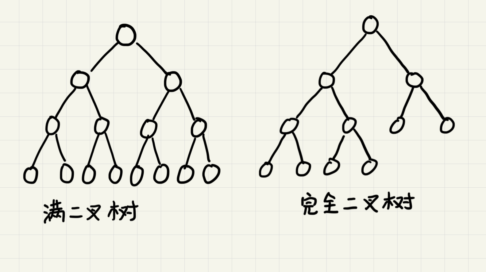
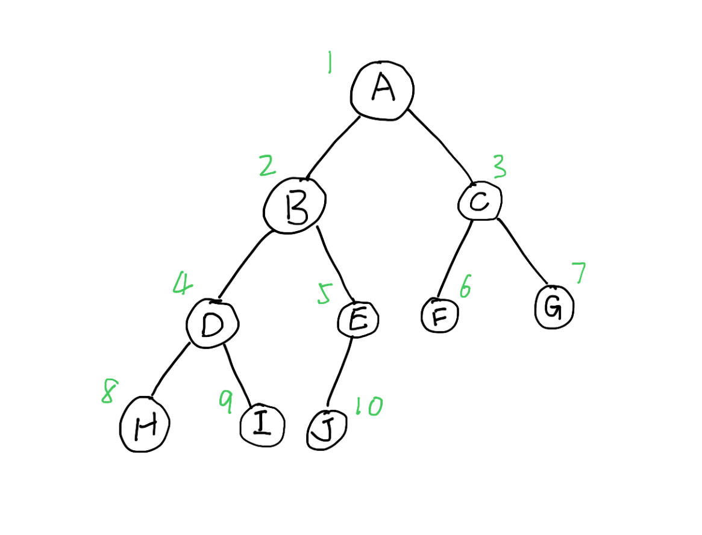

二叉树
树由一系列结点连接而成，连接相邻结点的叫做父子关系。

如图，A是B的父结点，B是A的子结点。没有父结点的称为根结点(E)。有相同父结点的互为兄弟结点(B, C, D)。没有子结点的称为叶子结点(如I和J)。
结点的高度 = 该结点到叶子结点的最长路径
A到G路径长度(边的数量)为2，因此A的高度为2
结点的深度 = 根结点到该结点的最长路径
A到E的路径长为1，因此A的深度为1
结点的层数 = 结点的深度+1
根结点算第一层，因此结点的层数就是深度+1
树的高度 = 根结点的高度
二叉树
每个结点最多只有两个子结点的树为二叉树。
满二叉树：
- 叶子结点都在树的最底层
- 除了叶子结点都有2个子结点
完全二叉树：
- 叶子结点全都在最下面2层
- 最底层的叶子结点全部靠左分布
- 除了最底层，其他层的结点个数达到最大

二叉树的存储
链式存储：每个结点包含左右子结点的指针和本结点的值
顺序存储：结点值存放在数组中
顺序存储规则如下：

根结点存储在下标为1的位置上，左子结点存在2*1=2的位置，右子结点存在2*1+1=3的位置。对任一存储在数组下标为index的结点，其左子结点存储在2*index的位置，右子结点存储在2*index+1的位置。
由此，上图的二叉树用顺序存储的方式得到的数组为{*, A, B, C, D, E, F, G, H, I, J}，可以发现，该存储方式会浪费一个存储空间。
如果D子树不存在，可以得到数组{*, A, B, C, *, E, F, G, *, *, J}，这时候会多出三个位置不存储数据。因此，当顺序存储的树不是完全二叉树的情况下，可能会浪费较多的数组空间。
二叉查找树
对树中的任一结点，其左子树中的每个结点的值都小于这个结点的值，而右子树结点的值都大于这个结点的值。
查找
取根结点对比，如果相等则返回，如果目标值比较小则在左子树中递归查找，否则在右子树中递归查找。
插入
新插入的结点，一般在叶子结点上。从根结点开始比较，如果要插入的数据比当前结点大且右子树为空，直接插入即可。若非空则递归右子树。左子树的操作同理。
删除
如果要删除的结点没有子结点，直接从父结点中删除该结点即可。
如果删除的结点只有一个子结点，将父结点中指向该结点的指针指向该结点的子结点。
如果要删除的结点右两个结点。找到右子树中的最小结点，替换到要删除的结点上，然后再删除那个最小结点(他可能有右子结点)。
关于重复数据
一般将重复的数据放到右子树中，查找数据的时候要一直查找到叶子结点。删除结点的时候也要依次删除。